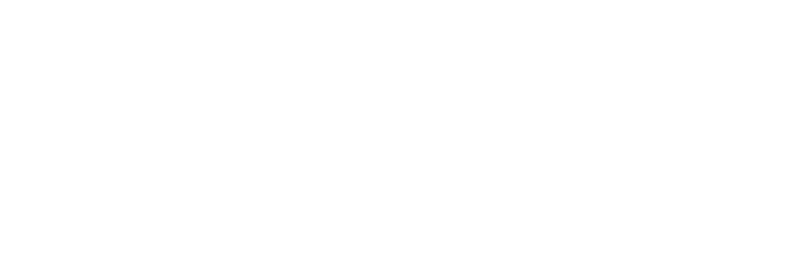

Portafolio de inteligencia artificial · Ciudad de México
Benjamín Esponda García
Abogado corporativo mexicano que construye con inteligencia artificial.
- plugins y agentes en Claude Code
- búsqueda sobre texto legal
- flujos en n8n
- pipelines de datos en Python
- sitios web
- video
- agentes de IA para marketing
00 · En pocas palabras
Un abogado que construye. Derecho, negocios y tecnología aplicada: escribo el análisis legal en energía, corporativo y regulatorio, y construyo mis propias herramientas para hacerlo mejor. Este portafolio es una muestra, no una lista completa.
Este soy yo
Aquí se construye todo esto.
Mi escritorio: un flujo de n8n en una pantalla y código en la otra.
Formación y comunidad
A la vanguardia: lo nuevo se prueba en trabajo real.
Uso la IA todos los días y me mantengo a la vanguardia de las herramientas y funciones nuevas de IA: las pruebo en trabajo real en cuanto salen.
Formación académica
2023 a 2025
Maestría en Derecho de la Empresa
Universidad Anáhuac
Disciplina: Derecho Corporativo
2023 a 2024
Master of Business Administration (MBA)
EAE Business School (Madrid, España)
Disciplina: Administración de Empresas
2015 a 2020
Licenciatura en Derecho
Universidad Iberoamericana (CDMX)
Disciplina: Derecho
Formación en IA
- Anthropic Academy: cursos gratuitos en línea de Anthropic.
- Harvey: cursos gratuitos en línea sobre IA para el trabajo legal.
- Platzi: certificaciones en su plataforma.
- Cursos en vivo y pregrabados de la comunidad de tech influencers como Juan Lombana y Enrique Rocha, así como de escuelas digitales como Coderhouse y OrangutanAI.
- Pláticas y workshops de Claude en México, como Claude for AI Engineering (Claude Community CDMX, octubre de 2026), Claude for Legal, Claude for Finance, Claude Community House, Claude for Revenue, Claude for Games, Claude en la Cámara de Diputados y Claude en el Senado de la República, entre otros. En Claude for AI Engineering resumí las cinco ponencias (uso de herramientas, MCP, ingeniería de contexto) y convertí las notas en un agente que responde como lo haría cada ponente.
Mi marca personal y consultoría · pivotek.mx
Pivot
Giro estratégico: un cambio fundamental y deliberado en la estrategia de un negocio (en su producto, su mercado objetivo o su modelo de ingresos) cuando se detecta que la dirección actual no está funcionando, con el fin de sobrevivir y crecer.
Tek
De tech: tecnología.
Le puse así porque sé que en unos años la abogacía no será lo que es hoy, ni lo que era antes de que llegara la IA. Hay que estar a la vanguardia de la tecnología y de las buenas prácticas.

01 · En breve
Lo que construyo y lo que ya logró.
Capacidad técnica
30+
Más de 30 proyectos en 2026, desde auditorías regulatorias internacionales hasta un producto legal-tech a la venta.
374
instrumentos de derecho energético indexados para búsqueda en lenguaje natural.
11,112
fragmentos, divididos según la jerarquía de la norma mexicana.
560,000+
contratos de compras públicas en un pipeline que muestra a proveedores de petróleo y gas dónde está el dinero.
10,000+
acciones de navegador automatizadas desde Claude Code.
Impacto
1
producto en vivo: Con Criterio, a la venta en concriterio.mx desde el 5 de noviembre de 2026.
40+
asuntos legales hechos con IA y cerrados satisfactoriamente.
90.7%
de artículos idénticos al texto oficial cuando un agente de IA aplicó 34 reformas reales del DOF (reforma-al-dia).
Automatización con criterio: todo flujo deja a una persona en el circuito cuando hay firmas, dinero o juicio legal de por medio.
- Stripe
- Gmail
- Google Calendar
- Google Drive
- Vercel
- Higgsfield
- Apify
- Canva
- automatización del navegador
- todo desde Claude Code
02 · Código abierto
16 repositorios públicos: el código, a la vista.
Hechos con Claude Code y abiertos para que cualquiera revise el código, en los mismos cuatro bloques de mi perfil de GitHub. Quince se verifican en GitHub Actions con cada cambio y doce tienen sitio en vivo.
Problema. Buena parte del trabajo legal y administrativo diario depende de saber qué dice hoy la ley y de cálculos que nadie verifica; estas herramientas lo resuelven con el código a la vista.
01
Derecho, compilado 4
Herramientas abiertas que leen, aplican y auditan la ley mexicana.
-
En operación
BEG-lag/reforma-al-dia
El día que el DOF publica una reforma, un agente de IA la aplica a leyes-mx y abre un pull request para que una persona lo revise. Probado con 34 decretos reales: 90.7% de artículos idénticos al texto oficial y 95.8% salvo formato.
-
En operación
BEG-lag/leyes-mx
36 leyes federales en Markdown con 375 versiones históricas: cada reforma es un commit, así que cada ley tiene historial, blame y diff. 13,370 artículos con la numeración validada.
-
Producto publicado
BEG-lag/mcp-leyes
Servidor MCP con la ley federal en cualquier fecha: el texto exacto de cada artículo, su historia de reformas, diferencias palabra por palabra y búsqueda, sobre el historial de leyes-mx. No es oficial ni asesoría legal.
-
Producto publicado
BEG-lag/mcp-dof
Servidor MCP para que Claude consulte el Diario Oficial: la edición de cualquier día, el texto íntegro de cada nota, búsqueda por título, FIX, UDIS y TIIE, desde la API oficial del SIDOF. Versión 1.0.0, también como imagen de Docker.
02
Datos abiertos 4
Registros públicos convertidos en datos vivos, APIs e historias visuales.
-
En operación
BEG-lag/radar-energia
Radar diario del sector energético: el DOF por subsector, CNE, SENER, ASEA y CENACE, más el FIX y los precios eléctricos y de combustibles, cada dato con su fuente oficial. Con feeds por subsector.
-
En operación
BEG-lag/constitucion-viva
La Constitución de 1917, viva: 285 decretos y 857 reformas artículo por artículo, máquina del tiempo, crecimiento del texto, cambios palabra por palabra desde 2006 y la red de citas de 36 leyes federales.
-
En operación
BEG-lag/indicadores-mx
37,372 valores oficiales en 17 series (FIX desde 1991, UDIS, TIIE, INPC, salario mínimo y UMA), cada uno ligado a su nota del DOF, como API estática en JSON y CSV. Datos CC0.
-
En operación
BEG-lag/dof-diario
Archivo del sumario del DOF desde enero de 2025: 484 días y 43,994 notas. Se actualiza solo dos veces al día y tiene buscador con filtros. Datos CC0.
03
Para el día a día 6
Pequeñas, privadas y útiles todos los días.
-
En operación
BEG-lag/hoy-circulo
Hoy No Circula, verificación y contingencias de la CAMe en la CDMX y el Edomex, revisadas cada 30 minutos. App instalable, funciona sin conexión y exporta al calendario.
-
En operación
BEG-lag/aumento-renta
¿Cuánto puede subir tu renta? La actualiza con el INPC o con UDIS, paso por paso y con la nota del DOF de cada valor, y en la CDMX revisa el tope del art. 2448 D con sus dos lecturas. Herramienta de cálculo, no asesoría legal.
-
En operación
BEG-lag/pension-imss
¿Cuánto me tocará de pensión? Estima la pensión IMSS por Ley 73 y Ley 97 con el artículo de cada paso y criterios de la SCJN; donde hay criterios distintos, deja elegir. Estimación informativa, no asesoría.
-
En operación
BEG-lag/finiquito-mx
Calcula finiquito y liquidación conforme a la Ley Federal del Trabajo, renglón por renglón y con el artículo de cada concepto. Librería y web. Herramienta de cálculo, no asesoría legal.
-
En operación
BEG-lag/facturas-cfdi
Organiza facturas CFDI (XML o el ZIP del SAT) en tu navegador, sin subir nada, y marca las posibles deducciones personales. Herramienta de organización, no asesoría fiscal.
-
En operación
BEG-lag/mis-laboratorios
Organiza y grafica tus análisis clínicos en tu navegador, sin subir nada: confirmas cada valor y ves cada indicador en el tiempo contra el rango del laboratorio. No interpreta ni diagnostica.
04
Para Claude Code 2
Cómo trabajo, empaquetado para cualquiera.
-
Producto publicado
BEG-lag/segundo-cerebro
Plantilla instalable de bóveda de Obsidian con las reglas para que Claude Code la lea antes de trabajar y la actualice después. La versión pública, sin mis datos.
-
Producto publicado
BEG-lag/tema-clawds
Tema claro para la app de Claude Code con 64 Clawds, la mascota de Claude Code, jugando en 20 escenas SVG.
- 16
repositorios públicos, con su código, sus pruebas y sus sitios.
Ver el perfil completo en GitHub
Cifras tomadas de cada repositorio (su README y sus pruebas en GitHub Actions) el 17 de noviembre de 2026. finiquito-mx, aumento-renta, pension-imss y facturas-cfdi son herramientas de cálculo, estimación y organización: no constituyen asesoría legal, fiscal ni financiera. mis-laboratorios no interpreta ni diagnostica.
03 · Mapa de habilidades de IA
Doce habilidades, todas con algo construido.
- 01
Agentes de IA y flujos agénticos
Plugins, skills y subagentes de Claude Code para siete materias del derecho mexicano; un sistema multiagente de nueve roles con señales tipadas; redes sociales operadas por Grok Bot y Muse de Meta.
- 02
Búsqueda sobre documentos (RAG)
RAG legal con embeddings especializados en derecho, pgvector y ranking híbrido sobre 374 instrumentos de energía.
- 03
Ingeniería de datos
Un pipeline sobre más de 560,000 contratos de compras públicas con actualización semanal y auditorías; modelos financieros en Python y Excel.
- 04
Automatización de procesos
Diseños en n8n para un cierre inmobiliario de 20 pasos y un resumen diario del DOF; tareas programadas para la revisión regulatoria mensual y la revisión semanal del segundo cerebro.
- 05
IA para el trabajo legal
Auditorías regulatorias internacionales, revisiones de contratos y de cumplimiento, dictámenes y cartas, cada dato con fuente y fecha de corte.
- 06
Construcción de productos
Con Criterio, del contenido al cobro, la entrega automática y las pruebas con compradores simulados.
- 07
Desarrollo web
concriterio.mx, pivotek.mx, casalegado.mx y carocomunicando.com.
- 08
Video y contenido con IA
Un video de entrada a escenario con locución de IA y motion graphics, y un pipeline automático de Reels con transcripción local y visión por computadora.
- 09
Marketing con IA
Más de una docena de skills de marketing y creatividad aplicados a campañas reales, auditorías SEO y textos de anuncios.
- 10
Integraciones (conectores MCP)
Stripe, Gmail, Google Calendar y Drive, Vercel, Higgsfield, Apify, Canva y más de 10,000 acciones de navegador, además de servidores MCP propios para el DOF y para la ley federal.
- 11
Criterio y calidad
Compuertas de aprobación humana, reglas antifraude, incertidumbre etiquetada, pruebas golden y construcción reproducible.
- 12
Aprendizaje continuo y comunidad
Uso diario de la IA y de las herramientas nuevas en cuanto salen; cursos gratuitos de Anthropic y Harvey; certificaciones en Platzi; cursos en vivo y pregrabados de tech influencers y escuelas digitales; pláticas y workshops de Claude en México.
Destacados · 04 a 07
Cuatro proyectos que muestran cómo trabajo.
Un producto a la venta, un buscador legal, datos de compras públicas y un proceso automatizado. Elige un cartel para ir a su sección.
04 · Destacado · Producto en vivo
Producto publicado
Con Criterio: kit de IA para abogados mexicanos.
Una guía (116 páginas en la edición Claude y 134 en la edición ChatGPT), 7 plugins por materia y 7 skills de redacción. A la venta en concriterio.mx desde el 5 de noviembre de 2026. Desde el 11 de noviembre también ofrece una guía de IA para principiantes, para el público general.
Problema. Los abogados en México quieren usar IA, pero no pueden confiar en respuestas sin fuente: la ley cambia y una cita inventada es un riesgo profesional.
7 plugins por materia
Cada plugin es un conjunto de skills de Claude Code apoyado en un corpus curado de leyes y criterios judiciales verificados, con un formato único de cita, etiquetas de dato y un bloque de validación que corre antes de entregar cualquier respuesta.
7 skills de redacción
- arrendamiento en CDMX
- NDA bilateral
- comisión mercantil
- servicios profesionales
- carta de intención
- carta poder simple
- calculadora de finiquito
- LFPDPPPProtección de datos
- LGSMCorporativo
- LFPPIMarcas
- LFDADerecho de autor
- Código de Comercio y LGTOCContratos mercantiles
- Leyes de energía de 2025Energía
- Ley del Notariado y Ley RegistralNotariado CDMX
Cómo se hizo, en números
115
afirmaciones verificadas y 46 capturas en la guía de la edición Claude. La edición ChatGPT se adaptó con pasos de instalación para Windows.
101
pruebas automáticas sin fallas en el Worker de Cloudflare que entrega los archivos y opera el boletín. Venta con página propia, ligas de pago y webhook de Stripe.
118
hallazgos distintos y cero bloqueantes en una ronda simulada con 20 compradores; 114 de los 115 hallazgos abiertos se cerraron el mismo día.
Día 1
de cada mes corre una revisión regulatoria programada. Un monitor en Python lee el DOF con el servicio de datos abiertos del gobierno y marca lo que toca a las leyes que cubre el producto.
- Su propia capa legal: términos y condiciones, aviso de privacidad y licencia de uso.
- Marketing: contenido producido con Claude Code y publicado por agentes de IA, auditoría SEO, dos campañas de Google Ads preparadas y el Pixel de Meta conectado al flujo de pago.
05 · Destacado · RAG
Prototipo
Un motor de búsqueda sobre derecho energético mexicano.
Problema. Las reglas de energía en México están dispersas entre el DOF y los sitios de ocho autoridades, y la reforma de 2025 sustituyó buena parte del marco. Encontrar el instrumento que de verdad aplica, y saber si sigue aplicando, toma horas.
Qué construí. Un pipeline que recopila, estructura e indexa la legislación energética mexicana para consultarla en lenguaje natural. Sin LangChain ni LlamaIndex: Python y SQL directos.
Escala (abril de 2026)
374 documentos
11,112 fragmentos, todos con embedding
352 vigentes 22 abrogados
- CRE
- SENER
- CENACE
- CNH
- CENAGAS
- CNE
- ASEA
- Congreso
Etapa 1
Recopilación
Scrapers asíncronos sobre el DOF y los sitios de los reguladores, con pausas entre solicitudes.
Etapa 2
Extracción
Texto de los PDF con respaldo de OCR para documentos escaneados.
Etapa 3
Segmentación
Divide el texto según la jerarquía de la norma mexicana (título, capítulo, artículo) y no por tamaño fijo.
Etapa 4
Almacenamiento
PostgreSQL con pgvector: documentos y fragmentos, marca de vigencia y una nota de vigencia para normas formalmente vigentes pero suspendidas en la práctica.
Etapa 5
Embeddings
Voyage AI
voyage-law-2, hecho para texto legal.Etapa 6
Búsqueda
Ranking híbrido (similitud vectorial y palabras clave, combinadas con reciprocal rank fusion), sinónimos, detección de leyes y ponderaciones.
Etapa 7
Respuestas
Claude contesta preguntas en lenguaje natural sobre los fragmentos recuperados.
Etapa 8
Calidad
Juego de pruebas "golden" como barrera de regresión (9 de 9) y auditorías de la base por duplicados, vigencia y fechas de publicación.
06 · Destacado · Datos a escala
Prototipo
SupplySense: dónde está el dinero en petróleo y gas.
Problema. Los proveedores del sector de petróleo y gas en México licitan a ciegas: no saben quién compra lo que venden, a qué precio ni cuándo. Qué construí: una herramienta de inteligencia de precios con datos de compras públicas.
Más de 560,000 contratos de CompraNet (2023 a 2025) en 26 categorías
150,000 contratos recientes de ComprasMX obtenidos con Playwright
Cada punto: 1,000 contratos
- 01
Carga
Más de 560,000 contratos de CompraNet (2023 a 2025) en 26 categorías, más 150,000 contratos recientes de ComprasMX.
- 02
Actualización
Descarga semanal automática con eliminación de duplicados; datos enriquecidos con geografía y orden de gobierno; ligas por subsidiaria de PEMEX.
- 03
Tablero
Indicadores, listas de seguimiento, filtros por giro, búsqueda global y exportación a CSV y PDF; multi-cliente básico.
- 04
Auditorías
Detectaron y corrigieron categorías mal clasificadas y valores atípicos, más un análisis del tamaño de mercado (TAM).
07 · Destacado · n8n
Propuesta entregada
Un cierre inmobiliario de 20 pasos, automatizado con freno de mano.
Problema. Un despacho inmobiliario en Baja California cierra compraventas de extranjeros a través de fideicomisos bancarios. Cada cierre tiene 20 pasos y depende de la notaría, el banco fiduciario, el valuador, el escrow y el Registro Público. La mayor parte del tiempo de los abogados se va en perseguir documentos y contestar "¿cómo va mi cierre?".
- 11pueden correr casi solos
- 7quedan asistidos
- 2siguen siendo humanos: la revisión jurídica del proyecto de escritura y la firma ante notario
Un bloque por paso, en el orden del cierre. Pasa el cursor para ver cuál es.
Disparador
Se abre el escrow
- Permiso de la SRE
- Proyecto de escritura
- Avalúo
- Certificados
Los pasos 4 a 7 arrancan en paralelo en cuanto se abre el escrow, lo que podría ahorrar de 7 a 10 días por cierre (estimado).
Las 9 piezas del diseño
- 01
Expediente único
Una fila por operación con compradores, unidad, banco, notaría, escrow, fechas de cada paso, vigencias y estatus.
Google Sheets al inicio; base de datos propia si crece el volumen
- 02
Carpeta por operación
Estructura fija creada sola: de 01 Cliente a 08 Post-cierre.
Google Drive
- 03
Correo saliente
Plantillas bilingües para cliente, notaría, banco, valuador, HOA y escrow, llenadas desde el expediente.
Gmail
- 04
Lector de correo entrante
Clasifica los correos de terceros, los liga a la operación, guarda adjuntos y mueve el estatus.
Gmail e IA
- 05
WhatsApp
Avisos, recordatorios y un bot que contesta "¿cómo va mi cierre?" desde el expediente.
WhatsApp Business API
- 06
IA documental
Lee pasaportes y certificados, compara el proyecto de escritura, resume videollamadas y comentarios del banco.
API de Claude, con aprobación humana
- 07
Temporizadores y compuertas
Plazos por paso, vigencia de certificados y compuerta de firma.
n8n
- 08
Tablero del socio director
Operaciones por etapa, días en cada paso, quién está atorando, alertas.
Google Sheets o Looker Studio
- 09
Bitácora y errores
Registro de cada ejecución y aviso inmediato si un flujo falla.
n8n
Compuerta de firma
Nadie agenda el cierre hasta que se cumplen seis condiciones.
- Permiso de la SRE otorgado
- Avalúo recibido
- Certificados vigentes a la fecha propuesta, y no sólo a hoy
- Proyecto aprobado por el banco fiduciario
- Fondos confirmados en escrow
- Saldo final pagado
6 de 6: el cierre ya se puede agendar
Antifraude · alerta roja
Ningún flujo envía cuentas bancarias, y cualquier correo sobre cambio de instrucciones de pago lanza una alerta roja y exige llamada de verificación.
- IA documental con aprobación humana. Lee pasaportes y certificados y compara el proyecto de escritura con el expediente.
- Los datos del cliente nunca viven en mi infraestructura. La demo corre con datos ficticios y la producción va en el servidor propio del despacho.
Estatus · etapa de diseño (noviembre de 2026)
Propuesta entregada; decisiones en un registro de decisiones; implementación planeada en 4 fases de 10 a 13 semanas (estimado), empezando con un piloto en un solo desarrollo. Ahorro esperado: de 50% a 70% de las horas de talacha por cierre (estimado), a medir en el diagnóstico.
08 · n8n · Resumen diario del DOF
En operación
El DOF de energía, en mi correo a las 8:30.
Problema. Cada mañana revisaba el DOF a mano para ver si salió algo que afectara a mis clientes de energía: unos 30 minutos al día (estimado).
Schedule
lun a vie, 8:30
HTTP Request
índice del día
HTML
título, dependencia, liga
Filter
palabras y dependencias de energía
Aggregate
todo junto
LLM
una frase + prioridad
Gmail
correo diario
Unas 100 horas al año de ahorro (estimado)
Resultado. Un correo diario con las publicaciones de energía ordenadas por prioridad. El flujo me dice qué leer; leerlo sigue siendo mi trabajo.
Se hizo como primera entrega de un curso de automatización con n8n, con el prompt documentado y un plan de manejo de errores.
09 · Trabajo legal y regulatorio
Asuntos legales hechos con IA. Todos confidenciales.
Por confidencialidad no detallo cada asunto ni a sus clientes.
Problema. Entregar análisis regulatorios en menos tiempo sin perder rigor: cada dato con su fuente y su fecha de corte.
Qué tipo de asuntos
Rutas de entrada a mercados extranjeros, mapas de obligaciones de contratos de energía, due diligence de permisos, revisiones de cumplimiento sanitario y publicitario, dictámenes de marca, cartas institucionales y notas técnicas. Para contratistas de energía, comercializadoras de combustibles, empresas de consumo, despachos y dependencias de gobierno, en México y en el extranjero.
Cómo uso la IA
Trabajo con Claude y Claude Code sobre un corpus de fuentes oficiales descargadas y convertidas a texto plano para cotejo literal; cada dato lleva cita y fecha de corte. Extraigo los contratos de forma estructurada a un archivo de contexto (obligaciones, plazos, alertas), reutilizo marcos regulatorios entre expedientes y escribo las reglas de redacción como restricciones verificables. Cuando aplica, uso mis propios plugins con el texto vigente de la ley. Los entregables (Word, PDF y HTML) salen de scripts generadores, con semáforo por sección. Esto es sólo un ejemplo, no todo lo que hago con IA. El análisis y el criterio son míos.
10 · Sitios web, video y marketing digital con IA
Cuatro sitios en vivo, video y agentes que publican.
Problema. Lanzar y vender un producto sin agencia: sitio, cobro, contenido y anuncios, hechos en casa.
-
En operación
concriterio.mx
Sitio de venta de Con Criterio: página para abogados y /para-todos para principiantes, con panel "Arma tu compra".
-
En operación
pivotek.mx
Casa de este portafolio. Sustituyó el sitio anterior en Next.js de PIVOTEK, mi marca personal y consultoría, que también construí (TypeScript, formulario con Resend, SEO técnico).
-
En operación
casalegado.mx
Mi marca de documentales biográficos: sitio de cinco páginas, más brandbook, dossier y presentación de ventas.
-
En operación
carocomunicando.com
Sitio de una capacitadora en oratoria y comunicación: home con portada animada, su método, su charla TEDx, casos y la marca.
En operación
Video
Una intro de entrada a escenario para la capacitadora, con motion graphics en Remotion y voz de IA, y videos de sus eventos.
Experimental
Reels automáticos
De un video crudo a un Reel terminado, con transcripción local en Whisper, apoyos visuales y edición en Python.
En operación
Redes con agentes
En Con Criterio, Claude Code produce el contenido y lo publican dos agentes: Grok Bot en TikTok y Muse de Meta en Instagram y Facebook.
Marketing
Más de una docena de skills de marketing aplicadas a casos reales: textos, anuncios, campañas y auditorías SEO.
11 · Mis herramientas
Claude Code llega a mis herramientas: automatizo, consulto y genero.
Las cifras salen de los registros de mis propias sesiones.
Problema. Que una práctica de una sola persona opere como un equipo: agenda, correo, cobros y seguimiento, conectados.
También Gmail, Google Calendar y Drive, tareas programadas, Vercel, Apify, Wispr Flow, Canva y los Artifacts de Claude; dos agentes externos (Grok Bot y Muse) y herramientas de línea de comandos: Obsidian, GitHub, Whisper y ffmpeg.
En operación
Segundo cerebro en Obsidian
Una nota por proyecto, persona y documento oficial; cada sesión deja su entrada en la bitácora y una tarea semanal lee mi agenda y mi correo. La plantilla es pública: segundo-cerebro.
Experimental
Sistema multiagente y CRMs
Nueve roles que leen un mismo expediente y se pasan señales tipadas, y CRMs internos sobre auto-crm.
En operación
BeCa: mi gato sabe qué está haciendo Claude.
Mi gato convertido en acompañante de escritorio: una app de macOS en Swift que escucha los hooks de Claude Code y me dice con su postura qué está haciendo Claude. ¿Por qué BeCa? Para darle un sentido del humor a mi día a día con la IA mientras trabajo.
clickCon un clic saluda; con otro juega unos cuatro segundos con Clawd.
Corre en local, sin red y sin guardar contenido. Los hooks son globales, así que BeCa funciona en todos los proyectos.
Saluda
al abrir una sesión
Teclea en el aire
mientras Claude trabaja
Revisa con la pata en el mentón
cuando edita un archivo
Salta
cuando termina su turno
Pide con las patas juntas
cuando espera mi permiso
Se desinfla
si hay un error de la API
Reposa
al cerrar la sesión
12 · Estudios de viabilidad
Propuesta entregada
Cada estudio, con veredicto y semáforo por fase.
Proyectos propios y servicios de PIVOTEK, mi consultoría.
Problema. Decidir si un negocio vale la pena antes de invertir en él.
Gracias a herramientas de inteligencia artificial y al uso de skills propios, hemos hecho muchos planes de negocio, todos con conclusiones validadas por mí.
13 · Cómo trabajo con IA
Siete reglas que no se negocian.
Primero la fuente.
Los textos oficiales se descargan al proyecto y cada dato lleva su fuente y fecha de corte.
La incertidumbre se etiqueta.
Todo entregable marca [ESTIMADO], [SUPUESTO] y [BRECHA DE DATO].
Lo importante lo aprueba una persona.
Firmas, dinero y juicio legal siempre pasan por alguien.
Entregables reproducibles.
Primero Markdown y luego PDF con pandoc y Typst; scripts que regeneran los archivos finales.
Las decisiones quedan registradas.
Registros de decisiones y semáforos VERDE, AMARILLO y ROJO.
Se prueba como usuario.
Compradores simulados, juegos de pruebas golden, pruebas automáticas y verificación contra el sitio en vivo.
La validación es explícita.
Los estudios dicen qué debe confirmarse con la autoridad competente y no constituyen opinión legal.
Herramientas técnicas
- IA
- Claude Code (skills, plugins, subagentes, conectores MCP, hooks, tareas programadas)
- API de Claude
- embeddings de Voyage AI
- ChatGPT y Codex
- Higgsfield (imagen, video, voz y música)
- Grok Bot
- Muse de Meta
- Datos
- Python
- PostgreSQL con pgvector
- Playwright
- pdfplumber y OCR
- Excel
- Automatización
- n8n
- Docker
- launchd
- GitHub Actions
- tareas programadas
- Video
- Remotion
- ffmpeg
- Whisper
- Apple Vision (Swift)
- Web
- Next.js
- TypeScript
- HTML y CSS estáticos
- GSAP
- Cloudflare Workers
- Vercel
- GitHub Pages
- Stripe
- Resend
- Web3Forms
- Marketing y analítica
- GA4
- Microsoft Clarity
- Vercel Analytics
- Google Ads
- Pixel de Meta
- Google Search Console
- Documentos
- Markdown
- pandoc
- Typst
- Word con control de cambios
- Conocimiento
- Obsidian